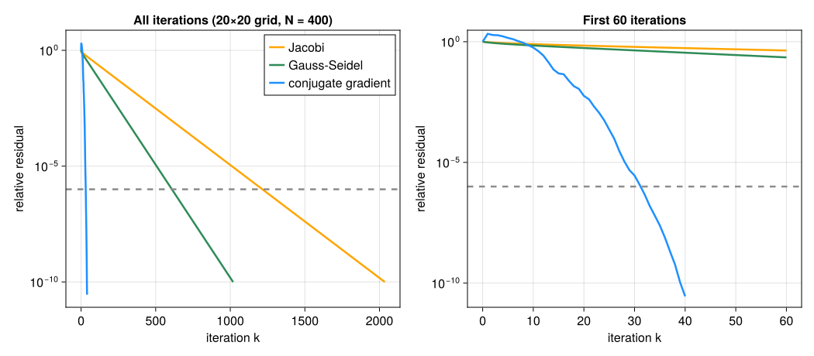

10. 連立一次方程式の反復法#
第5章のGauss消去法・LU分解は、決まった回数の演算で解を構成する直接法である。途中の丸めを除けば、最後まで計算すれば答えが得られる。一方、未知数が数十万〜数百万になる問題では、次の二つが障害になる。
密な行列として扱うと、分解に \(O(n^3)\) の演算、保存に \(O(n^2)\) のメモリが必要になる（第4・5章）。
行列が疎でも、消去の途中でもともと0だった位置に非零が現れるフィルインが起こり、メモリが足りなくなることがある（第4章）。
そこで、近似解 \(x_0,x_1,x_2,\ldots\) を少しずつ改善していく反復法を使う。反復法は主に行列ベクトル積 \(Ax\) だけを使うので、疎行列の構造をそのまま活かせる。その代わり、第7章の非線形方程式と同じく、「いつ収束するか」「いつ止めるか」を自分で判断する必要がある。
10.1. この章の目標#
直接法と反復法の違いを説明できる。
産業連関の波及計算が、そのまま反復法になっていることを説明できる。
Jacobi法とGauss-Seidel法を「残差を使った修正」として実装し、収束の条件（対角優位）を確かめられる。
残差による停止条件と、解の前進誤差との関係を、条件数を使って説明できる。
フィルインとメモリの観点から、直接法と反復法を選べる。
♣ 共役勾配法が少ない反復で収束する理由の概略を説明できる。
注釈
本章は発展・応用編の第10章であり、講義では時間があれば扱う。第4章の残差・条件数・疎行列、第5章の前進代入と産業連関分析、第7章の反復と停止条件を使う。基本部分は標準ライブラリ LinearAlgebra、SparseArrays、Random だけで実行できる。
10.2. 波及を1段ずつ足す：産業連関の反復計算#
第5章の産業連関分析では、投入係数行列 \(A\) と最終需要 \(d\) から、生産額 \(x\) を
の解として求めた。この式を「右辺の \(x\) に今の近似を入れ、左辺を次の近似にする」と読み替えると、
という反復になる。最初の数回を書き出すと
である。\(d\) は最終需要を満たすための直接の生産、\(Ad\) はそのために必要な原材料の生産（第1次の波及）、\(A^2d\) はその原材料のための生産（第2次の波及）を表す。経済学で「波及効果を段階的に足していく」と説明される計算そのものであり、同時に連立方程式 \((I-A)x=d\) の反復解法にもなっている。
何回くらい足せば、第5章でLU分解から求めた解と3桁一致するだろうか。予想してから実行しよう。
using LinearAlgebra, SparseArrays, Random
Ain = [0.10 0.05 0.02; # 第5章と同じ投入係数行列
0.20 0.40 0.15;
0.10 0.20 0.25]
d = [50.0, 300.0, 400.0]
x_direct = (I - Ain) \ d # 直接法による解（比較の基準）
function ripple_iteration(A, d, nrounds; reference, report=(1, 2, 3, 5, 10, 20, 30))
x = zeros(length(d))
for k in 1:nrounds
x = d + A*x # 波及をもう1段足す
k in report && println("k=$k: x = ", round.(x, digits=2), ", 相対誤差 = ",
round(norm(x - reference)/norm(reference), sigdigits=3))
end
return x
end
ripple_iteration(Ain, d, 30; reference=x_direct)
println("投入係数の列和の最大値 opnorm(Ain, 1) = ", opnorm(Ain, 1))
k=1: x = [50.0, 300.0, 400.0], 相対誤差 = 0.525
k=2: x = [78.0, 490.0, 565.0], 相対誤差 = 0.282
k=3: x = [93.6, 596.35, 647.05], 相対誤差 = 0.152
k=5: x = [106.74, 685.71, 713.67], 相対誤差 = 0.0444
k=10: x = [111.92, 720.94, 739.73], 相対誤差 = 0.00205
k=20: x = [112.17, 722.63, 740.99], 相対誤差 = 4.34e-6
k=30: x = [112.17, 722.64, 740.99], 相対誤差 = 9.22e-9
投入係数の列和の最大値 opnorm(Ain, 1) = 0.65
10回で相対誤差は約 \(2\times10^{-3}\)、20回で約 \(4\times10^{-6}\) となり、直接法の解に近づいた。
なぜ収束するのかを見よう。真の解は \(x=d+Ax\) を満たすので、誤差 \(e_k=x_k-x\) について
が成り立つ。誤差には毎回同じ行列 \(A\) がかかる。 第4章の♣節で見た1ノルムの作用素ノルム（列の絶対値和の最大値）を使うと
である。どの産業も、1単位の生産に使う中間投入の合計が0.65以下なので、波及は1段ごとに65%以下に縮む。したがって誤差は \(0.65^k\) 倍以下になり、0に近づく。実際の縮み方はこの上界より速い。
この「誤差に毎回かかる行列が、ベクトルを縮めるなら収束する」という見方が、以下のすべての反復法に共通する。
10.3. 残差で修正する：反復法の共通の形#
一般の \(Ax=b\) に戻ろう。第4章の後退誤差の考え方では、残差 \(r_k=b-Ax_k\) は「今の近似が方程式をどれだけ満たしていないか」を表した。もし \(A\) で簡単に割れるなら、\(x_k+A^{-1}r_k\) が厳密解になる。しかし、それは元の問題を解くことと同じである。
そこで、\(A\) に近く、しかも簡単に解ける行列 \(M\) を選び、
と修正を繰り返す。実際に \(M^{-1}\) を作るのではなく、\(Mz=r_k\) を解いて \(z\) を足す。産業連関の反復は、\(A\) を \(I-A_{\mathrm{in}}\)、\(M=I\) とした場合にあたる（確かめてみよ）。
誤差は \(e_{k+1}=(I-M^{-1}A)e_k\) と更新されるので、\(G=I-M^{-1}A\) がベクトルを縮めれば収束する。\(M\) が \(A\) に近いほど \(G\) は小さくなり、少ない反復で済む。一方、\(Mz=r\) を解く手間は増える。代表的な選び方は次のとおりである。
方法 |
\(M\) の選び方 |
\(Mz=r\) の解き方 |
|---|---|---|
産業連関の波及計算 |
\(I\)（\(A=I-A_{\mathrm{in}}\) に対して） |
そのまま \(z=r\) |
Jacobi法 |
\(A\) の対角部分 \(D\) |
各成分を対角成分で割る |
Gauss-Seidel法 |
\(A\) の下三角部分（対角を含む） |
前進代入（第5章） |
成分で書くと、Jacobi法は「第 \(i\) 式を \(x_i\) について解き、他の未知数には前回の値を入れる」方法である。
Gauss-Seidel法は、同じ反復の中ですでに更新した \(x_1^{(k+1)},\ldots,x_{i-1}^{(k+1)}\) をすぐに使う。この「新しい値をすぐ使う」操作が、下三角行列による前進代入に対応する。
10.3.1. 2元の例を手で追う#
の解は \((2,1)\) である。\(x^{(0)}=(0,0)\) から始めると、
**青は前回の値（上付き0）、橙は今回の更新値（上付き1）**として、最初の1回を並べる。色を外しても、上付きの番号で使う時点を区別できる。
更新する成分 |
Jacobi法：前回の値を使う |
Gauss-Seidel法：更新済みなら今回の値を使う |
|---|---|---|
\(x_1^{(1)}\) |
\((9-\textcolor{#0072B2}{x_2^{(0)}})/4=(9-0)/4=2.25\) |
\((9-\textcolor{#0072B2}{x_2^{(0)}})/4=2.25\) |
\(x_2^{(1)}\) |
\((9-2\textcolor{#0072B2}{x_1^{(0)}})/5=(9-0)/5=1.8\) |
\((9-2\textcolor{#B54A00}{x_1^{(1)}})/5=(9-2\times2.25)/5=0.9\) |
違いが出るのは2行目である。Jacobi法は更新前の \(x_1^{(0)}=0\) を使い、Gauss-Seidel法は今求めた \(x_1^{(1)}=2.25\) をすぐに使う。
次の反復では、Jacobi法は \(x^{(2)}=(1.8,0.9)\)、Gauss-Seidel法は \(x^{(2)}=(2.025,0.99)\) となる。
次のコードは、上の共通の形をそのまま実装したものである。stationary_iteration は \(Mz=r\) を解く関数 solve_M を受け取り、毎回の相対残差を記録する。
function stationary_iteration(A, b, solve_M; x0=zeros(length(b)), rtol=1e-8, maxiter=100_000)
x = float.(copy(x0))
bnorm = norm(b)
history = Float64[] # 各反復の相対残差
for k in 0:maxiter
r = b - A*x # 残差
push!(history, norm(r)/bnorm)
history[end] ≤ rtol && return (x=x, iterations=k, converged=true, history=history)
isfinite(history[end]) || break # 発散したら止める
k < maxiter && (x = x + solve_M(r)) # Mz = r を解いて修正する
end
return (x=x, iterations=length(history)-1, converged=false, history=history)
end
jacobi_solver(A) = (dA = diag(A); r -> r ./ dA) # M = 対角部分
gauss_seidel_solver(A) = (L = LowerTriangular(tril(A)); r -> L \ r) # M = 下三角部分
function show_iterates(A, b, make_solver, nsteps)
solve_M = make_solver(A)
x = zeros(length(b))
for k in 1:nsteps
x = x + solve_M(b - A*x)
println(" k=$k: x = ", round.(x, digits=4))
end
end
A_small = [4.0 1.0; 2.0 5.0]
b_small = [9.0, 9.0]
println("Jacobi法"); show_iterates(A_small, b_small, jacobi_solver, 4)
println("Gauss-Seidel法"); show_iterates(A_small, b_small, gauss_seidel_solver, 4)
Jacobi法
k=1: x = [2.25, 1.8]
k=2: x = [1.8, 0.9]
k=3: x = [2.025, 1.08]
k=4: x = [1.98, 0.99]
Gauss-Seidel法
k=1: x = [2.25, 0.9]
k=2: x = [2.025, 0.99]
k=3: x = [2.0025, 0.999]
k=4: x = [2.0002, 0.9999]
最初の2回は手計算と一致する。4回後の誤差は、Jacobi法で約0.02、Gauss-Seidel法で約0.0002である。この例では、新しい値をすぐ使うGauss-Seidel法の方がずっと速く収束する。
gauss_seidel_solver の中身は、第5章で実装した前進代入を、Juliaの LowerTriangular に任せたものである。反復法の1回の修正の中に、直接法で学んだ三角行列の解法が部品として使われている。
10.4. いつ収束するか：対角優位#
反復法はいつでも収束するわけではない。Jacobi法では、誤差にかかる行列は \(G=I-D^{-1}A\) であり、その \((i,j)\) 成分は \(i\ne j\) で \(-a_{ij}/a_{ii}\)、対角では0である。第4章の♣節の∞ノルム（行の絶対値和の最大値）を使うと
となる。したがって、すべての行で
が成り立てば \(\|G\|_\infty<1\) となり、どんな初期値からでも誤差は縮む。この性質を狭義対角優位という。「各式で、自分の未知数の係数がほかの係数の合計より大きい」という意味である。狭義対角優位ならGauss-Seidel法も収束することが知られている。
上の例 \(\begin{bmatrix}4&1\\2&5\end{bmatrix}\) は \(4>1\)、\(5>2\) なので対角優位である。逆に対角優位でない行列では、発散することがある。次の例では、\(|1|<|2|\)、\(|1|<|3|\) である。
A_bad = [1.0 2.0; 3.0 1.0]
b_bad = [3.0, 4.0] # 解は (1, 1)
bad = stationary_iteration(A_bad, b_bad, jacobi_solver(A_bad); maxiter=8)
println("相対残差の履歴 = ", round.(bad.history, sigdigits=3))
A_swapped = [3.0 1.0; 1.0 2.0] # 2本の式の順番を入れ替えたもの
b_swapped = [4.0, 3.0]
good = stationary_iteration(A_swapped, b_swapped, jacobi_solver(A_swapped); rtol=1e-10)
println("式を入れ替えた場合: 反復 ", good.iterations, " 回, 解 = ", good.x)
相対残差の履歴 = [1.0, 2.41, 6.0, 14.4, 36.0, 86.7, 216.0, 520.0, 1300.0]
式を入れ替えた場合: 反復 26 回, 解 = [0.9999999999234345, 0.9999999999234344]
対角優位でない行列では、相対残差が反復ごとに約2.4倍ずつ増えて発散する。同じ2本の式の順番を入れ替えると対角優位になり、収束する。式の順番を変えても解は変わらないが、反復法の振る舞いは大きく変わる。第5章の行交換と同じく、「数学的に同じ問題」でも計算手順の選び方が結果を左右する。
対角優位は十分条件であり、必要条件ではない。次の節の格子の問題は、対角成分4に対して非対角の絶対値和がちょうど4以下という「ぎりぎり」の場合だが、対称正定値でもあるので収束する。一般の収束条件は、\(G\) の固有値の絶対値の最大値（スペクトル半径）が1未満であることで、第11章の固有値の考え方を使って調べられる。
10.5. 大きな疎行列の例：格子上の方程式#
板の上の定常的な温度分布や、地図上で各地点の値が近隣の値となめらかにつながる状況を考える。正方形を \(m\times m\) の格子点に分け、各点の値 \(u_{ij}\) が
を満たすとする（境界の外側の値は0とする）。これは偏微分方程式を第8章の2階差分で離散化したものであり、未知数は \(N=m^2\) 個、各式に現れる未知数は高々5個である。行列 \(A\) は \(N\times N\) だが、各行の非零成分は5個以下の疎行列になる。
次の laplacian2d は、第4章の三重対角行列 spdiagm をKronecker積 kron で組み合わせてこの行列を作る。作り方の細部は追わなくてよい。\(m=10,20,40\) で、Jacobi法とGauss-Seidel法が相対残差 \(10^{-6}\) に達するまでの反復回数を調べる。格子を細かくすると反復回数はどう変わるか、予想してから実行しよう。
function laplacian2d(m)
T = spdiagm(-1 => fill(-1.0, m-1), 0 => fill(2.0, m), 1 => fill(-1.0, m-1))
Im = sparse(1.0I, m, m)
return kron(Im, T) + kron(T, Im) # 各行に 4 と -1 が並ぶ N×N 疎行列
end
println("m=4 の行列の第6行の非零成分: ", nonzeros(laplacian2d(4)[6, :]))
println("m | N | 非零成分数 | 条件数 | Jacobi | Gauss-Seidel")
for m in (10, 20, 40)
A_grid = laplacian2d(m)
b_grid = ones(m^2)
jac = stationary_iteration(A_grid, b_grid, jacobi_solver(A_grid); rtol=1e-6)
gs = stationary_iteration(A_grid, b_grid, gauss_seidel_solver(A_grid); rtol=1e-6)
println(m, " | ", m^2, " | ", nnz(A_grid), " | ", round(cond(Matrix(A_grid)), sigdigits=3),
" | ", jac.iterations, " | ", gs.iterations)
end
m=4 の行列の第6行の非零成分: [-1.0, -1.0, 4.0, -1.0, -1.0]
m | N | 非零成分数 | 条件数 | Jacobi | Gauss-Seidel
10 | 100 | 460 | 48.4 | 332 | 167
20 | 400 | 1920 | 178.0 | 1216 | 609
40 | 1600 | 7840 | 681.0 | 4639 | 2321
格子の一辺 \(m\) を2倍にすると、反復回数はJacobi法・Gauss-Seidel法とも約4倍になり、条件数も約4倍になる。Gauss-Seidel法の反復回数はJacobi法の約半分である。
1回の反復は疎行列ベクトル積と、対角での割り算または疎な前進代入なので、仕事量は \(O(\mathrm{nnz}(A))=O(N)\) である。しかし反復回数が \(m^2=N\) に比例して増えるので、全体では \(O(N^2)\) の仕事になる。格子の値が隣の点としか直接やり取りしないため、端の情報が反対側へ伝わるのに何回もの反復が必要になる、と直感的に理解できる。この遅さを改善するのが、♣節の共役勾配法や、粗い格子と細かい格子を組み合わせるマルチグリッド法である。
10.6. 残差で止めてよいか#
反復法は、相対残差 \(\|b-Ax_k\|/\|b\|\) が指定した rtol 以下になったら止めるのが基本である。残差は真の解を知らなくても計算できるからである。では、rtol=1e-6 で止めれば、解も6桁正しいのだろうか。
第4章の不等式
によれば、前進誤差は最大で条件数倍まで大きくなり得る。\(m=40\) の格子では \(\kappa\approx681\) なので、上界は約 \(7\times10^{-4}\) である。実際にどうなるかを、解が滑らかな場合（右辺がすべて1）と、解がばらつく場合（真の解を乱数で作る）で比べよう。どちらも同じ停止条件のGauss-Seidel法を使う。
function compare_forward_errors(m; rtol=1e-6)
A_grid = laplacian2d(m)
N = m^2
Random.seed!(2)
for (label, x_true) in (("滑らかな解", A_grid \ ones(N)), ("ばらつく解", randn(N)))
b_grid = A_grid*x_true
gs = stationary_iteration(A_grid, b_grid, gauss_seidel_solver(A_grid); rtol=rtol)
println(label, ": 反復 ", gs.iterations, " 回, 相対残差 = ", round(gs.history[end], sigdigits=3),
", 相対誤差 = ", round(norm(gs.x - x_true)/norm(x_true), sigdigits=3))
end
println("条件数 × rtol = ", round(cond(Matrix(A_grid))*rtol, sigdigits=3))
end
compare_forward_errors(40)
滑らかな解: 反復 2321 回, 相対残差 = 9.95e-7, 相対誤差 = 1.19e-6
ばらつく解: 反復 522 回, 相対残差 = 9.99e-7, 相対誤差 = 0.000364
条件数 × rtol = 0.000681
同じ相対残差 \(10^{-6}\) で止めたのに、解が滑らかな場合の相対誤差は約 \(10^{-6}\)、ばらつく場合は約 \(4\times10^{-4}\) と、300倍以上違う。後者は第4章の上界にかなり近い。
理由は次のとおりである。Gauss-Seidel法は、隣の点との細かい振動のような誤差をすぐに消すが、格子全体にわたるなだらかな誤差はなかなか消せない。ところが、なだらかな誤差ベクトル \(e\) に \(A\) をかけると、隣どうしの差をとる計算なので \(Ae\) はとても小さくなる。そのため、残差 \(r=-Ae\) には現れにくい誤差が、解の中に残っている。第4章で見た \(\operatorname{diag}(1,\delta)\) の例で、第2成分の誤差が残差では \(\delta\) 倍に縮んで見えたのと同じ仕組みである。
ここから、次の教訓が得られる。
停止条件の
rtolは、解の誤差の許容値そのものではない。誤差を \(\varepsilon\) 以下にしたければ、目安として \(\mathrm{rtol}\approx\varepsilon/\kappa\) まで下げる必要がある。条件数が分からない場合は、
rtolを1桁ずつ下げて解がどれだけ変わるかを見る、別の方法の解と比べる、など複数の手がかりを組み合わせる（第1章の検証の考え方）。どちらの右辺でも \(\kappa\times\mathrm{rtol}\) の上界は守られている。上界は「最悪でもこの程度」を教え、実際の誤差は問題（ここでは解の形）と解法の性質で決まる。
10.7. 直接法と反復法をどう選ぶか：フィルインとメモリ#
では、格子の問題には常に反復法を使うべきだろうか。Juliaの A \ b やLU分解は、疎行列に対しては、フィルインが少なくなるように行と列の順番を工夫する疎行列用の直接法を使う。\(L,U\) に現れる非零成分の数を、元の行列や、密な行列として保存した場合と比べよう。2次元の格子に加えて、3次元の格子（立方体を \(m\times m\times m\) に分け、各式に未知数が7個現れる）も調べる。
function laplacian3d(m)
T = spdiagm(-1 => fill(-1.0, m-1), 0 => fill(2.0, m), 1 => fill(-1.0, m-1))
Im = sparse(1.0I, m, m)
return kron(Im, Im, T) + kron(Im, T, Im) + kron(T, Im, Im)
end
println("次元 | m | 未知数N | nnz(A) | nnz(L)+nnz(U) | 倍率 | 密行列の成分数N^2")
for (dimension, builder, sizes) in (("2次元", laplacian2d, (50, 100, 200)),
("3次元", laplacian3d, (10, 20, 30)))
for m in sizes
A_grid = builder(m)
F_grid = lu(A_grid) # 疎行列用のLU分解
nnz_factor = nnz(F_grid.L) + nnz(F_grid.U)
N = size(A_grid, 1)
println(dimension, " | ", m, " | ", N, " | ", nnz(A_grid), " | ", nnz_factor, " | ",
round(nnz_factor/nnz(A_grid), digits=1), " | ", N^2)
end
end
次元 | m | 未知数N | nnz(A) | nnz(L)+nnz(U) | 倍率 | 密行列の成分数N^2
2次元 | 50 | 2500 | 12300 | 71826 | 5.8 | 6250000
2次元 | 100 | 10000 | 49600 | 412664 | 8.3 | 100000000
2次元 | 200 | 40000 | 199200 | 2163822 | 10.9 | 1600000000
3次元 | 10 | 1000 | 6400 | 64380 | 10.1 | 1000000
3次元 | 20 | 8000 | 53600 | 1684564 | 31.4 | 64000000
3次元 | 30 | 27000 | 183600 | 11211548 | 61.1 | 729000000
2次元の格子では、\(L,U\) の非零成分は元の行列の6〜11倍に増えるが、密な行列として保存する \(N^2\) 個よりはるかに少ない。この規模の2次元問題なら、疎行列用の直接法（A \ b）は速く、何千回も反復するJacobi法やGauss-Seidel法より有利である。反復法が常に優れているわけではない。
一方、3次元の格子では、同じ程度の未知数でもフィルインの倍率が10倍から61倍へと急に増える。3次元では各点が遠くの点と消去の過程で結び付きやすいためである。一辺 \(m=100\)（未知数100万）の3次元問題になると、分解の保存に必要なメモリは一般的な計算機の容量を超えやすい。ここで、\(A\) そのものの \(O(\mathrm{nnz}(A))\) のメモリだけで動く反復法が必要になる。
状況 |
第一候補 |
理由 |
|---|---|---|
小〜中規模の密行列 |
LU分解（ |
反復法の利点がない。\(O(n^3)\) でも十分速い |
同じ行列で右辺が多い |
LU分解を再利用 |
分解後は1本あたり \(O(n^2)\) または疎な代入 |
2次元格子など、フィルインが許容できる疎行列 |
疎行列用の直接法 |
反復回数や停止条件を気にしなくてよい |
3次元格子・巨大なネットワークなど、フィルインで分解が保存できない |
反復法（対称正定値なら共役勾配法） |
行列ベクトル積とベクトル数本分のメモリで済む |
行列を明示的に作れず、\(Av\) を計算する関数だけがある |
反復法 |
直接法は行列の成分を必要とする |
近い問題を少しずつ変えて何度も解く |
反復法（前回の解を初期値にする） |
良い初期値から始めると反復回数が減る |
10.8. \(\clubsuit\) 共役勾配法：Krylov部分空間で解く#
\(A\) が対称正定値（第6章）のとき、\(Ax=b\) を解くことは、関数
を最小にすることと同じである。実際、\(\phi\) の勾配は \(Ax-b=-r\) であり、最小点で0になる。第7章の最適化とのつながりで述べたように、連立方程式が最小化問題として見えるのである。
残差の方向（最も急に下る方向）に進むだけでは、前に進んだ向きを後の反復で打ち消してしまい、遅い。共役勾配法（conjugate gradient; CG）は、進む方向 \(p_0,p_1,\ldots\) を互いに \(p_i^TAp_j=0\)（\(i\ne j\)）となるように選び、一度最小化した方向を後で崩さない。その結果、\(k\) 回目の近似 \(x_k\) は、第11章のKrylov部分空間
の中で、\(A\) で重み付けした誤差を最小にする点になる。1回の反復に必要なのは、行列ベクトル積1回と内積2回、ベクトル数本分のメモリだけである。
厳密な演算なら \(N\) 回以内に厳密解に到達するが、実用上は反復法として使う。誤差はおおよそ \(\left(\frac{\sqrt\kappa-1}{\sqrt\kappa+1}\right)^k\) の速さで減るので、必要な反復回数は \(\kappa\) ではなく \(\sqrt\kappa\) に比例する。格子の問題では \(\kappa\propto m^2\) なので、反復回数は \(m\) に比例する程度で済む。
function conjugate_gradient(A, b; rtol=1e-8, maxiter=10*length(b))
x = zeros(length(b))
r = copy(b) # x = 0 のときの残差
p = copy(r) # 最初の探索方向
rr = dot(r, r)
bnorm = norm(b)
history = [sqrt(rr)/bnorm]
for k in 1:maxiter
Ap = A*p # 1反復で1回だけの行列ベクトル積
α = rr/dot(p, Ap) # p方向に最小化する歩幅
x .+= α .* p
r .-= α .* Ap
rr_new = dot(r, r)
push!(history, sqrt(rr_new)/bnorm)
history[end] ≤ rtol && return (x=x, iterations=k, converged=true, history=history)
p = r .+ (rr_new/rr) .* p # 以前の方向とA-直交する新しい方向
rr = rr_new
end
return (x=x, iterations=maxiter, converged=false, history=history)
end
println("m | Jacobi | Gauss-Seidel | 共役勾配法")
for m in (10, 20, 40)
A_grid = laplacian2d(m)
b_grid = ones(m^2)
jac = stationary_iteration(A_grid, b_grid, jacobi_solver(A_grid); rtol=1e-6)
gs = stationary_iteration(A_grid, b_grid, gauss_seidel_solver(A_grid); rtol=1e-6)
cg = conjugate_gradient(A_grid, b_grid; rtol=1e-6)
println(m, " | ", jac.iterations, " | ", gs.iterations, " | ", cg.iterations,
"（解の相対差 ", round(norm(cg.x - A_grid\b_grid)/norm(A_grid\b_grid), sigdigits=2), "）")
end
m | Jacobi | Gauss-Seidel | 共役勾配法
10 | 332 | 167 | 14（解の相対差 3.0e-8）
20 | 1216 | 609 | 32（解の相対差 1.0e-8）
40 | 4639 | 2321 | 63（解の相対差 1.7e-8）
Show code cell source
# 図を再作成する場合のみ実行する。
# 未導入なら一度だけ: import Pkg; Pkg.add("CairoMakie")
using CairoMakie
CairoMakie.activate!(type="svg")
set_theme!(Theme(fontsize=16, linewidth=2.5))
figure_dir = isdir("pic") ? "pic" : joinpath("..", "pic")
let m = 20
A_grid = laplacian2d(m)
b_grid = ones(m^2)
results = (("Jacobi", stationary_iteration(A_grid, b_grid, jacobi_solver(A_grid); rtol=1e-10), :orange),
("Gauss-Seidel", stationary_iteration(A_grid, b_grid, gauss_seidel_solver(A_grid); rtol=1e-10), :seagreen),
("conjugate gradient", conjugate_gradient(A_grid, b_grid; rtol=1e-10), :dodgerblue))
fig = Figure(size=(1050, 460))
ax_all = Axis(fig[1, 1]; xlabel="iteration k", ylabel="relative residual",
yscale=log10, title="All iterations (20×20 grid, N = 400)")
ax_zoom = Axis(fig[1, 2]; xlabel="iteration k", ylabel="relative residual",
yscale=log10, title="First 60 iterations")
for (label, result, color) in results
k = 0:length(result.history)-1
lines!(ax_all, k, result.history; color=color, label=label)
n = min(61, length(result.history))
lines!(ax_zoom, k[1:n], result.history[1:n]; color=color, label=label)
end
for ax in (ax_all, ax_zoom)
hlines!(ax, [1e-6]; color=:gray55, linestyle=:dash)
end
ylims!(ax_zoom, 1e-11, 3.0)
axislegend(ax_all; position=:rt)
save(joinpath(figure_dir, "iterative_convergence.svg"), fig)
end


図 10.1 相対残差の履歴（縦軸は対数目盛）。左は全体、右は最初の60回の拡大。Jacobi法とGauss-Seidel法はほぼ一定の割合で残差が減るので直線に見える。共役勾配法は、反復が進むほど減り方が速くなり、約40回で \(10^{-10}\) に達する。破線は本文の停止条件 \(10^{-6}\)。#
\(m\) を2倍にすると、共役勾配法の反復回数は約2倍（14→32→63）にとどまり、Jacobi法の約4倍と比べて増え方が小さい。\(m=40\) では、Jacobi法の約4600回に対して約60回である。1回の仕事量はどちらも \(O(N)\) なので、差はそのまま計算時間の差になる。
実用では、共役勾配法の各反復で、Jacobi法やGauss-Seidel法の \(M\) のような「\(A\) に近く簡単に解ける行列」を使って問題を解きやすく変換する前処理（preconditioning）を組み合わせる。本章で学んだ単純な反復法は、それ自体よりも、前処理の部品として今も使われている。Juliaでは Krylov.jl や IterativeSolvers.jl などのパッケージに、前処理付きの共役勾配法や、非対称な行列用のGMRES法などが実装されている。
10.9. まとめ#
本章のまとめ
反復法は、簡単に解ける行列 \(M\) を使って \(x_{k+1}=x_k+M^{-1}(b-Ax_k)\) と残差で修正を繰り返す。誤差には毎回同じ行列 \(I-M^{-1}A\) がかかり、それがベクトルを縮めれば収束する。産業連関の波及計算（\(M=I\)）、Jacobi法（\(M=\) 対角）、Gauss-Seidel法（\(M=\) 下三角）はすべてこの形である。狭義対角優位なら収束が保証されるが、式の並べ方で振る舞いは変わる。
停止条件の相対残差は、解の相対誤差の許容値そのものではない。前進誤差は最大で条件数倍になり得る。疎行列でも、フィルインが許容できる規模なら直接法が有利なことが多く、反復法はメモリが足りない巨大な問題や、行列ベクトル積しか使えない場合に力を発揮する。
10.10. 演習#
本文の式・表・出力を使って説明してよい。
演習
手で反復する：\(5x_1+2x_2=7\)、\(x_1+4x_2=5\)（解は \((1,1)\)）に、\(x^{(0)}=(0,0)\) からJacobi法とGauss-Seidel法をそれぞれ2回適用せよ。この係数行列が狭義対角優位であることも確かめよ。
式の順番と収束：\(x_1+3x_2=4\)、\(4x_1+x_2=5\) にJacobi法を使うと収束するか。対角優位かどうかで判断し、式の順番を入れ替えた場合と比べよ。コードでも確かめること。
波及と反復回数：産業連関の例で、投入係数の列和の最大値が0.65から0.9になったとする。本文の上界 \(\|e_k\|_1\le0.9^k\|e_0\|_1\) から、誤差を初期の \(10^{-6}\) 倍以下にするのに必要な反復回数を見積もり、0.65の場合と比べよ。列和が1に近い経済では、波及の計算に何が起こるか。
停止条件の意味：「相対残差 \(10^{-6}\) で止めたのだから、解は6桁正しい」という主張に対し、本文の格子の実験を使って反論せよ。解の誤差を \(10^{-6}\) 以下にしたいとき、停止条件をどう決めればよいか。
探究：シナリオ分析と初期値：格子の問題（\(m=40\)）で、右辺 \(b\) を少しだけ変えた問題（例えば
b .+ 0.01 .* randn(N)）を解く。初期値を0にした場合と、元の問題の解を初期値にした場合で、Gauss-Seidel法と共役勾配法の反復回数を比べよ。まず結果を予想して書き、次に実験せよ。右辺の変え方（小さく変える／大きく変える／滑らかに変える）によって差がどう変わるかも調べ、第5章の「分解の再利用」と比べて、どちらの方法がどのような場面で有利かを考察せよ。
10.11. 参考文献と関連する節#
T. A. Driscoll and R. J. Braun, Fundamentals of Numerical Computation, Chapter 8: Krylov methods in linear algebra、§8.6 MINRES and conjugate gradients。疎行列と反復法、共役勾配法の収束。
Krylov.jl：Juliaで前処理付きの共役勾配法やGMRES法などを使うためのパッケージ。